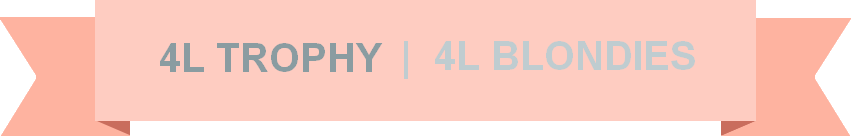

Notre sommes deux amies et nous avons décidé de participer à cette incroyable aventure qui va nous pousser autant
mentalement, que physiquement, mais également nous permettre de vivre une inoubliable expérience humaine !
Mener ce projet à terme, demande beaucoup de rigueur d’organisation, de volonté et de détermination. Les démarches
administratives, les recherches de sponsors, la préparation de la célèbre 4L sont des épreuves que nous voulons
relever pour partir dans les meilleures conditions possibles. Ce projet est pour nous la promesse de vivre une
expérience humaine très riche et l’occasion de se faire des souvenirs à jamais gravés dans nos esprits.